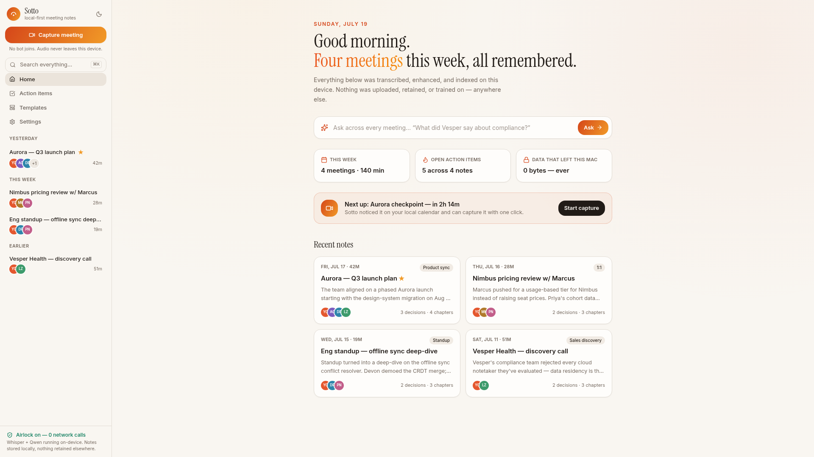
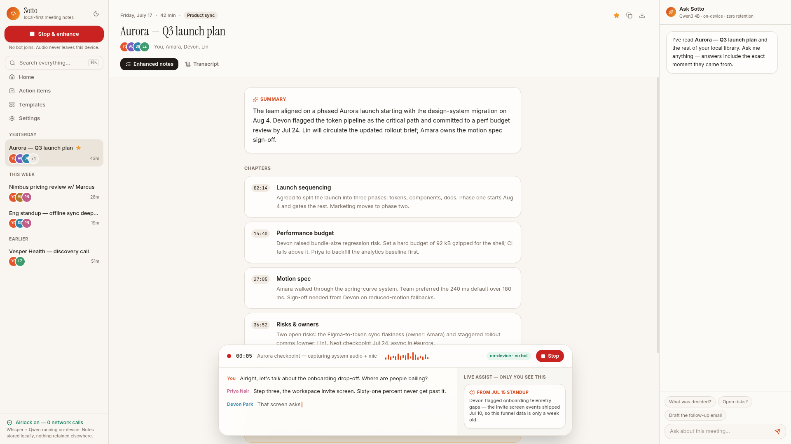

100%
on-device transcription & AI
Open Granola captures any call without a bot, transcribes it with on-device Whisper, and turns it into beautiful notes with a local LLM. No cloud. No accounts. No data retention. Ever.
0 bytes sent to any server · 0 trackers · 0 training on your data — verifiable in the source

Granola tidies up once the meeting ends. Open Granola works while you're still in it — streaming transcript, plus a private assist panel only you can see.

Grabs system audio + mic directly on macOS, Windows and Linux. Nobody in the call sees a thing — and no audio ever leaves the device.
Streaming Whisper Large v3 Turbo (or Parakeet) with local speaker diarization and custom vocabulary for names, numbers and jargon.
An embedded llama.cpp model writes chapters, decisions and action items — with owners and due dates — the moment you stop recording.
Every meeting is embedded into a local vector index. Ask “what did Vesper say about compliance?” and get the answer with the timestamp.
Export to Markdown, Obsidian, Notion, Todoist or plain clipboard — automatically, after every meeting. No copy-paste labor.
Reads your local calendar (ICS / CalDAV / system) to detect meetings and title notes automatically — Google and Outlook equally welcome.
Product syncs, 1:1s, sales discovery, interviews, board updates — or write your own in Markdown. Auto-matched to each meeting.
Verify any line against the source. Encrypted local audio, off by default, shredded on your schedule — your retention policy, not ours.
One flag disables the entire network stack at the OS level. Compliance teams can verify it in ~40 lines of source.
Granola proved bot-free capture matters. It also uploads your audio, trains on your data by default, caps the free tier, and charges $14/user/month for history. Open Granola keeps the idea, removes the cloud.
| Open Granola | Granola | OpenWhispr | |
|---|---|---|---|
| Price for everything | Free, forever | $14–35/user/mo | Free tier + $8–20/mo |
| Audio & AI processing | 100% on-device | Cloud | Local (cloud optional) |
| Trains on your data | Impossible — no network | Opt-out (org-wide: $35 tier) | No |
| Data retention | None — audio deleted post-transcript | Server-side, policy by tier | Local by default |
| Works fully offline | Yes | No | Yes |
| Live assist during the call | On-device recall, facts, follow-ups | Yes — but in their cloud | No |
| Mobile | LAN-paired companion (roadmap) | iOS + Android apps | Desktop only |
| Speaker diarization | On-device, free | Cloud, weak past 3 people | Local — Business tier |
| Linux | First-class | No | Yes |
| Audio playback / verification | Optional, encrypted, local | Not available | Yes |
| History cap on free tier | None | ~25 notes / 30 days | 5h recordings/mo |
| License | Apache-2.0 | Proprietary | Open core |
Star the repo, grab a build, and take your meetings back from the cloud.